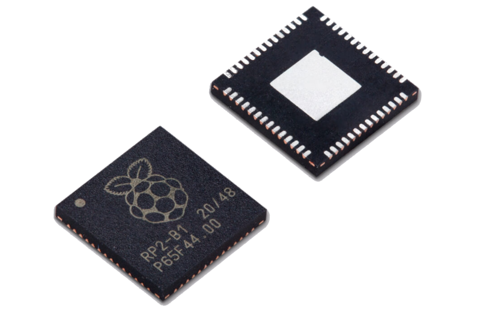
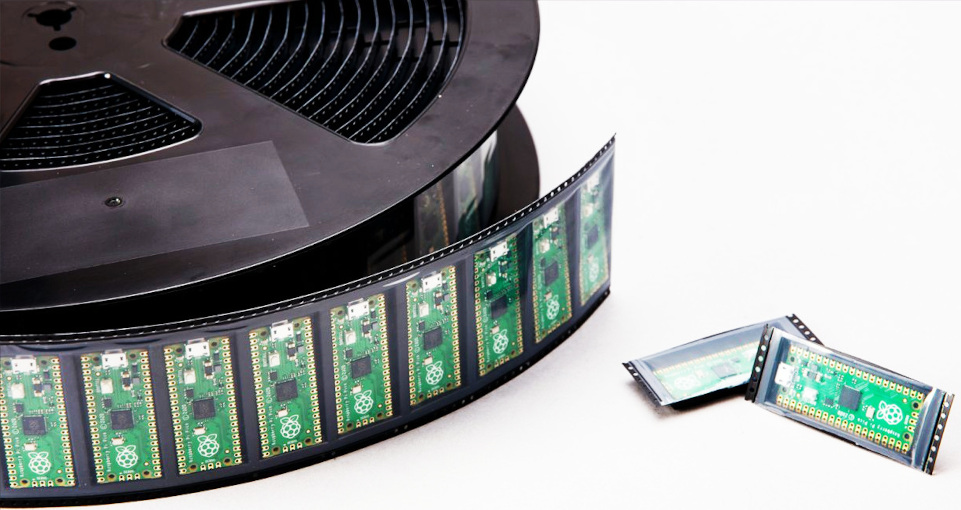
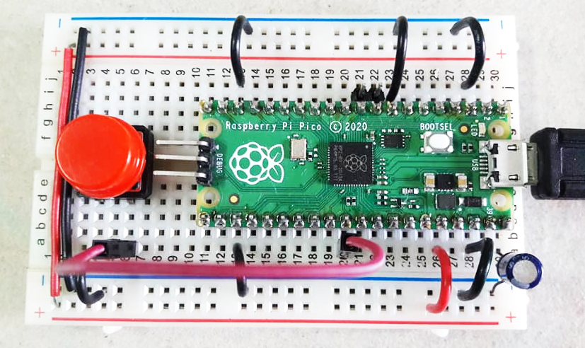
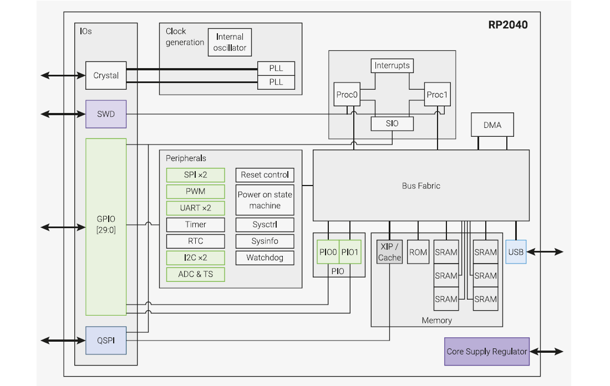
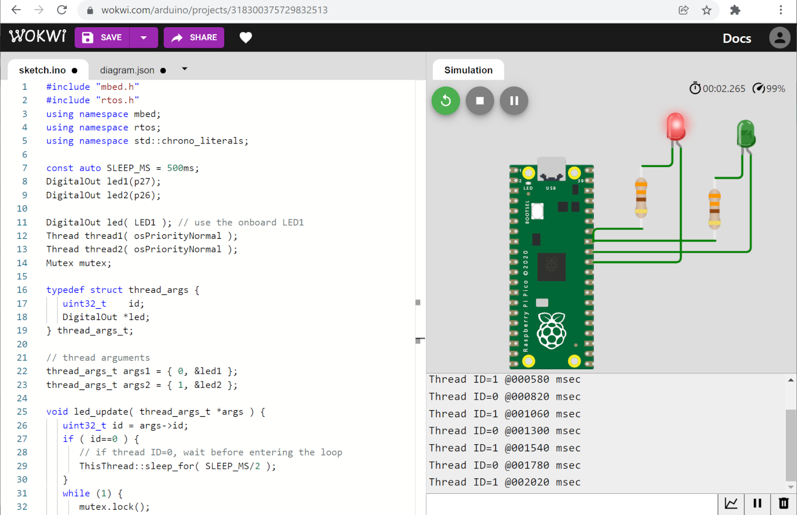
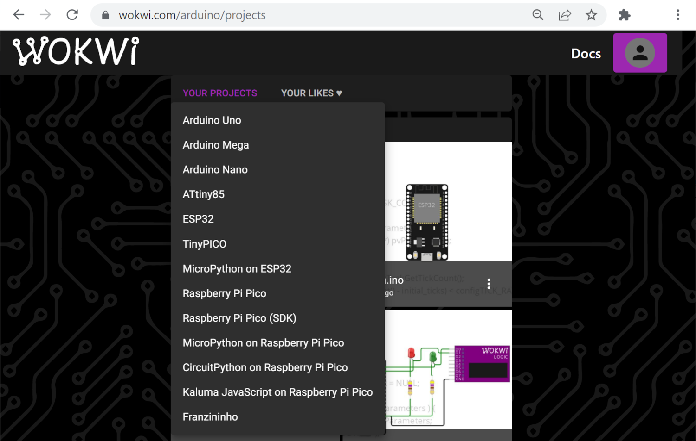

Raspberry Pi RP2040#
▷ แนะนำบอร์ด Pico RP2040#
บริษัท Raspberry Pi Trading Ltd. / Raspberry Pi Foundation (Cambridge, UK) เป็นที่รู้จักในฐานะผู้ผลิตบอร์ด Raspberry Pi ซึ่งเป็นคอมพิวเตอร์ประเภทที่เรียกว่า SBC (Single Board Computer) ที่มีชิป SoC (System-on-Chip) ที่ใช้ตัวประมวลผลตามสถาปัตยกรรมของ ARM Cortex-A Series มีการพัฒนาจากโมเดลรุ่นแรก ตั้งแต่ปีค.ศ. 2012 มาจนถึงโมเดลล่าสุดในปัจจุบัน (ในขณะที่เขียนเอกสารนี้) คือ Raspberry Pi 4B และ Raspberry Pi 5 ตามลำดับ
ในวันที่ 21 มกราคม พ.ศ. 2564 (2021-01-21) ทางบริษัทได้เปิดตัวบอร์ด Raspberry Pi Pico ราคาเริ่มต้นที่ $4 ซึ่งถือว่าเป็นการเริ่มใช้ชิปไมโครคอนโทรลเลอร์เป็นตัวประมวลผลหลัก และทางทีมพัฒนาได้เลือกใช้ตัวประมวลผล RP2040 SoC (datasheet) ที่ได้ออกแบบเองและจ้างโรงงานของ TSMC ในไต้หวันผลิตชิปและโรงงานของ Sony ในประเทศญี่ปุ่นประกอบบอร์ด อ้างอิงจาก: "The Journey to Raspberry Pi Silicon" (Feb 8, 2021) by Liam Fraser. — PDF
คุณสมบัติของบอร์ดโดยสรุปมีดังนี้
- Dual-core Arm Cortex-M0+ @ 133MHz
- On-chip SRAM: 264KB
- External QSPI Flash: 2MB (up to 16MB)
- 30 GPIO pins (4 used as analogue inputs)
- 4-input 12 bit ADC (500k Samples/sec. max)
- 2 × UARTs, 2 × SPI controllers, and 2 × I2C controllers
- 16 × PWM channels
- 1 × USB 1.1 controller and PHY, with host and device support
- 8 × Raspberry Pi Programmable I/O (PIO) state machines
- USB mass-storage boot mode with UF2 support, for drag-and-drop programming
รูป: บอร์ด Raspberry Pi Pico มุมมองด้านบนและด้านล่าง (Source: Raspberry Pi)
รูป: แผนผังแสดงตำแหน่งขาของบอร์ด RPi Pico RP2040 (Source: Raspberry Pi)
อ้างอิงจากการให้สัมภาษณ์ของ James Adams ตำแหน่ง Chief Operating Officer (COO) (ในขณะนั้น) ของบริษัท Raspberry Pi Trading เขากล่าวว่า การพัฒนา RP2040 เริ่มต้นมาตั้งแต่ปลายปีค.ศ. 2016 และได้รับชิป Test Silicon มาทดสอบในปีค.ศ. 2018 หลังจากนั้นก็มีการแก้ไข หรือ Silicon Revision อีกหลายครั้ง และได้ให้ TSMC เป็นผู้ผลิตชิป และใช้เทคโนโลยีการผลิตชิปที่ระดับ 40nm (นาโนเมตร)
RP2040
- RP2040 เป็นชิป SoC (System-on-a-Chip) และจัดว่าเป็นชิปไมโครคอนโทรลเลอร์ (MCU: Microcontroller Unit) เปิดตัวครั้งแรกเมื่อวันที่ 21 มกราคม ค.ศ. 2021
- ออกแบบและพัฒนาโดยบริษัท Raspberry Pi (Trading) Ltd.
- ชิปมีตัวถังของไอซีเป็นแบบ QFN56 (7mm × 7mm) ตัวชิปมีขนาดของ Silicon Die ประมาณ 2 mm^2 ใช้เทคโนโลยีการผลิตทรานซิสเตอร์ที่ขนาด 40 นาโนเมตร ผลิตโดยโรงงานของ TSMC
- ภายในชิป มีซีพียูตามสถาปัตยกรรม Arm 32-bit Cortex-M0+ เป็นแบบ Dual-Core
- การเขียนโปรแกรมก็เป็นไปตามชุดคำสั่งของ ARM Thumb-2 Instruction Set (ARMv6-M Architecture)
- ชิปทำงานด้วยความถี่ปรกติ 133MHz มีหน่วยความจำ on-chip SRAM ขนาด 264 KB ไม่มีหน่วยความาจำแฟลชอยู่ภายใน
โดยทั่วไป ถ้าเป็นชิปที่ใช้ Arm Cortex-M0+ และเป็นแบบแกนเดียว (Single-Core) ถ้าลองสำรวจดูชิปของบริษัทอื่นที่มีการผลิตออกมาขายหลายปีแล้ว ก็จะเห็นได้ว่า ความถี่ในการทำงานที่ไม่สูงมากนัก เช่น 48 MHz และเน้นการทำงานแบบใช้พลังงานต่ำ
ในเชิงเปรียบเทียบ ไมโครคอนโทรลเลอร์ของบริษัทอื่นที่ใช้ตัวประมวลผลตามสถาปัตยกรรม ARM Cortex-M0+ (ตั้งแต่ปีค.ศ. 2012 เป็นต้นมา) ก็มีตัวอย่างดังนี้
- Atmel / Microchip: SAMD21
- STMicroelectronics: STM32L0 Series
- NXP / Freescale: Kinetis KL0x Series
- Cypress Semiconductor / Infineon: PSoC 4 S-Series
- Silicon Labs: EFM32 Zero Gecko
- Renesas Electronics: RE01
RP2040 Pico ถือว่าเป็นบอร์ดไมโครคอนโทรลเลอร์ตระกูล 32-bit Arm Cortex-M0+ ที่มีราคาถูก (คิดเป็นเงินไทยประมาณ 200 ถึง 250 บาท ในช่วงเริ่มต้นการนำเข้ามาจำหน่ายในไทยในต้นปีพ.ศ. 2564) ดังนั้นจึงเป็นอีกหนึ่งตัวเลือกที่น่าสนใจ และเหมาะสำหรับการนำมาใช้เป็นอุปกรณ์ในการเรียนรู้และฝึกปฏิบัติด้านระบบสมองกลฝังตัว

รูป: Raspberry Pi RP2040 Chip (56-Pin QFN package, 7 mm × 7 mm) (Source: Raspberry Pi)
รูป: รูปถ่าย X-Ray ของชิป RP2040 และการแผนผังการแบ่งส่วนวงจรภายใน (Chip Floorplan)

รูป: ม้วนบรรจุบอร์ด Raspberry Pi Pico (Source: Raspberry Pi)
รูป: ผังวงจรของบอร์ด Raspberry Pi Pico

รูป: ตัวอย่างการใช้งานบอร์ด RPi RP2040 Pico บนเบรดบอร์ด และการต่อวงจรปุ่มกดสำหรับรีเซต
รหัส RP2040 มีความหมายอย่างไร?
RP= Raspberry Pi2= Dual Core0= Arm Cortex M0+4= floor(log2(264 KB/16 KB)) — 264KB SRAM0= floor(log2(0 / 16KB)) — no on-chip Flash memory
ข้อสังเกตและรายละเอียดเพิ่มเติม
- ชิป RP2040 มีหน่วยความจำ SRAM ขนาด 264 KB แต่ไม่มีหน่วยความจำแฟลชอยู่ภายในชิป ดังนั้นจะต้องใช้ชิปหน่วยความจำภายนอก (ความจุตั้งแต่ 2MB จนถึง 16MB) และรองรับการเชื่อมต่อแบบ QSPI Bus
- การอ่านคำสั่ง (Instructions) จะต้องอ่านจากชิปแฟลชภายนอก แต่มีวงจรภายใน ที่มีชื่อว่า "eXecute In Place (XIP) Subsystem" และเชื่อมต่อกับ On-chip Cache (Two-way set-associative) ขนาด 16KB ทำหน้าที่คอยจัดการอ่านข้อมูลจากแฟลชภายนอก และนำไปใช้เป็นคำสั่งของโปรแกรมสำหรับการทำงานของซีพียู และมีวงจร Synchronous Serial Interface (SSI) Controller สำหรับการอ่านข้อมูลในชิปแฟลชภายนอก
- ชิป RP2040 ต้องการสัญญาณความถี่ 12MHz จากวงจร Crystal Oscillator ภายนอก
- บอร์ด Pico RP2040 มีหน่วยความจำ 2MB Flash (W25Q16JVUXIQ) แต่ตัวชิปรองรับความจุได้สูงสุดถึง 16MB
- ชิป RP2040 ใช้ตัวประมวลผล Arm Cortex-M0+ (ARMv6-M ISA) ซึ่งเน้นการทำงานแบบใช้พลังงานต่ำ (Low-power) มากกว่าการทำงานด้วยความเร็วสูง หากเปรียบเทียบกับ Arm Cortex-M4/M7 ก็มีข้อจำกัด เช่น ชิปนี้ไม่มีหน่วยประมวลผลแบบ Floating Point Unit (FPU) ดังนั้นจึงทำงานแบบ Soft-float และไม่มีหน่วยประมวลผลแบบ NEON Vector Processing Unit ดังนั้นจึงไม่เหมาะกับงานด้าน DSP (Digital Signal Processing) ที่เน้นการคำนวณเชิงตัวเลข ในส่วนของรูปแบบคำสั่ง ก็จะใช้ "Thumb" Instruction Set ซึ่งมีขนาด 16 บิต ไม่สามารถใช้กับคำสั่งที่มีขนาด 32 บิต
- ชิป RP2040 มีวงจรรอบข้างซีพียูดังนี้
- มีวงจร XOSC ต่อกับขา XIN/XOUT (บอร์ด Pico ใช้ 12MHz Crystal Oscillator) แต่เมื่อเริ่มต้นทำงาน RP2040 จะใช้วงจรภายในที่เรียกว่า Ring Oscillator (ROSC) ทำหน้าที่เป็น Startup Clock
- มีวงจร PLL 2 ชุด แบ่งเป็น PLL_SYS (up to 133MHz) และ PLL_USB (48MHz) เพื่อสร้างสัญญาณ Clock ที่มีความถี่สูงขึ้นจากสัญญาณภายนอก
- มีวงจร UART 2 ชุด (UART0 และ UART1) แต่ละชุดมีหน่วยความจำ 32-level FIFO สำหรับรับและส่งข้อมูลแยกกัน (RX / TX Buffers) และสามารถเลือกใช้หมายเลขขา GPIO สำหรับ TX และ RX ได้หลายขา
- มีวงจร I2C 2 ชุด (I2C0 แและ I2C1) สามารถเลือกใช้ขา GPIO สำหรับ SDA และ SCL ได้หลายขา
- มีวงจร SPI 2 ชุด (SPI0 แและ SPI1) สามารถเลือกใช้ขา GPIO สำหรับ SCK, MOSI และ MISO ได้หลายขา
- มีวงจร USB 1.1 (Full Speed / 12 Mbps, Low Speed devices / 1.5 Mbps)
- มีวงจร RTC (Real-Time Clock)
- มีวงจรภายในที่เรียกว่า MPU (Memory Protection Unit) ดังนั้นจึงใช้ในการป้องกันการเข้าถึงหน่วยความจำในแต่ละส่วนที่ไม่เหมาะสมได้
- รองรับการทำงานโหมดประหยัดพลังงาน 2 โหมด ได้แก่ SLEEP และ DORMANT ซีพียูจะถูกปลุกให้ตื่นมาทำงานต่อได้ โดยการสร้างเหตุการณ์จากภายนอก (External Trigger) เช่น จากขา GPIO หรือ จากเหตุการณ์ภายในชิป เช่น จากวงจร RTC โดยการตั้งเวลาปลุกได้ หากใช้งานในโหมด DORMANT จะต้องเปลี่ยนไปใช้สัญญาณความถี่จาก XOSC หรือ ROSC และปิดการทำงานของวงจร PLL
- บอร์ด Pico RP2040 มีขาแบบ Male Pin Headers ด้านละหนึ่งแถว (ระยะห่างระหว่างขาในแต่ละแถวเท่ากับ 2.54mm) สามารถเสียบขาลงบนเบรดบอร์ดได้ เหมาะสำหรับการต่อวงจรบนเบรดบอร์ด หรือนำไปใช้กับบอร์ดฐาน (Baseboard)
- ขา I/O ทำงานที่แรงดันไฟเลี้ยง IOVDD=+3.3V สำหรับบอร์ด Pico และวงจรภายใน เช่น ซีพียูใช้แรงดันไฟเลี้ยง DVDD=+1.1V (สามารถใช้จากวงจรควบคุมแรงดันไฟฟ้า 1.1V ภายในชิป)
- ขา GPIO และขา Analog Input ของบอร์ดทำงานที่ระดับแรงดัน 3.3V (ขา I/O ไม่รองรับอินพุตที่ระดับ 5V)
- บอร์ดมีพอร์ต Micro USB เพื่อเชื่อมต่อกับคอมพิวเตอร์ของผู้ใช้ หรือจะป้อนแรงดันจากแหล่งจ่ายที่ขา VSYS ก็ได้ (ศึกษาการใช้งานและข้อควรระวังได้จากเอกสาร Pico datasheet)
- ชิป RP2040 มี BootROM (First-stage bootloader) อยู่ภายใน (ถูกโปรแกรมมาจากโรงงานผลิตไว้แล้ว) และไม่สูญหายหรือถูกเขียนทับโดยผู้ใช้ ดังนั้นเมื่อเข้าสู่ USB Bootloader จะมองเห็นไดร์ฟที่มีชื่อว่า RPI-RP2 ทำให้สะดวกต่อการอัปโหลดไฟล์เฟิร์มแวร์ ซึ่งจะต้องมีการแปลงให้อยู่ในรูปของไฟล์ .UF2 ก่อนนำไปใส่ลงในไดร์ฟ — ในเชิงเปรียบเทียบบอร์ด เช่น Arduino Nano 33 BLE และ Arduino Portenta H7 ที่ใช้ได้กับ Arduino Core Mbed OS จะต้องมีการติดตั้ง Arduino Bootloader ก่อนนำไปใช้งาน
- เมื่อกดปุ่ม BOOTSEL (ปุ่มสีขาวบนบอร์ด) และจ่ายไฟเลี้ยงให้บอร์ด หรือรีเซตการทำงานที่ขา RUN
จะทำให้ชิป RP2040 เข้าสู่โหมด UF2 USB Bootloader ผู้
ใช้สามารถมองเห็น USB Storage Drive ใหม่ชื่อ
RPI-RP2 - ถ้าเรามีไฟล์ .uf2 (ที่ได้จากการแปลงไฟล์เฟิร์มแวร์ประเภทอื่น เช่น .elf / .hex / .bin) ก็สามารถนำไปใส่ลงในไดรฟ์ดังกล่าว เพื่อโปรแกรมการทำงานของชิปใหม่ และถือว่าค่อนข้างสะดวก ไม่ต้องใช้อุปกรณ์เสริม
- บอร์ด Arduino หลายแบบ จะใช้วงจรหรือชิป USB-to-Serial หรือทำงานแบบ Native USB ในการเชื่อมต่อกับคอมพิวเตอร์ของผู้ใช้ แต่จะต้องมีการติดตั้งเฟิร์มแวร์ที่เรียกว่า Arduino Bootloader ลงในหน่วยความจำ Flash ของไมโครคอนโทรลเลอร์ก่อน จึงจะพร้อมใช้งานร่วมกับ Arduino IDE และอัปโหลด Arduino Sketch ใหม่ไปยังบอร์ดได้
- บอร์ด Raspberry Pi Pico ไม่มีปุ่มกด RESET (มีแต่ปุ่ม BOOTSEL) ดังนั้นเพื่อความสะดวกในการเข้าสู่โหมด UF2 USB Boot แนะนำให้ต่อวงจรปุ่มกด RESET (Active-Low) สำหรับการรีเซตตัวประมวลผล เพิ่มที่ขา RUN (ให้ดูตำแหน่งขาจากแผนผัง PinOut / PinMap ของบอร์ด Pico) เมื่อกดปุ่มรีเซตบนบอร์ด จะได้สถานะลอจิกที่ขาดังกล่าวเป็น LOW แต่ถ้าปล่อยปุ่ม จะได้สถานะเป็น HIGH (และมีตัวต้านทานแบบ Pull-up ต่อไว้แล้ว)
- ในการทดลองใช้งานบอร์ด RP2040 Pico แนะนำให้ต่อวงจรปุ่มกดสำหรับรีเซตเพิ่มไว้บนแผงต่อวงจร (เบรดบอร์ด) เพื่อความสะดวกในการทำให้บอร์ดเข้าสู่โหมด UF2 USB Boot
- บอร์ด Raspberry Pi Pico มีขาสำหรับ SWD (Serial Wire Debug) ได้แก่ SWDIO และ SWCLK สำหรับการอัปโหลด และการดีบักการทำงานของโปรแกรมในขณะทำงาน หรือดีบักการทำงานของโปรแกรมในฮาร์ดแวร์ (In-Circuit Debugging) โดยทำงานร่วมกับซอฟต์แวร์ GDB (GNU Debugger และ OpenOCD ได้
- บอร์ด Rasberry Pi Pico ไม่สามารถเชื่อมต่อไร้สายด้วย WiFi / BLE ต่อมาจึงมีบอร์ด Raspberry Pi Pico-W ออกมา โดยมีการเพิ่มโมดูลสำหรับการสื่อสารไร้สาย
Pico-W
- เป็นบอร์ดรุ่นที่แตกต่างจากบอร์ด Pico โดยเพิ่มโมดูล WiFi/BLE (ใช้โมดูล Infineon CYW43439, IEEE 802.11 b/g/n wireless LAN + Bluetooth 5.2) การเชื่อมต่อระหว่าง RP2040 กับ CYW43439 จะใช้ขา GPIO และ ขาสำหรับบัส SPI ดังนั้นการใช้งานขา GPIO บางขา จึงแตกต่างไปในกรณีของบอร์ด Pico
- ขา
GP23,GP24,GP25และGP29ของชิป RP2040 ไปต่อไปยังขา Pin Header ของบอร์ด GP29ใช้เป็นขาเอาต์พุต SPI CLK สำหรับ CYW43439 และใช้เป็นขาอินพุต-แอนะล็อกสำหรับ ADC3 เพื่อวัดแรงดันไฟเลี้ยง VSYS/3 (แต่จะใช้ได้ ต้องทำให้ขาGP25เป็น HIGH)GP25ใช้เป็นขาเอาต์พุต SPI CS สำหรับ CYW43439GP24ใช้เป็นขาอินพุต-เอาต์พุต SPI DATA / IRQ สำหรับ CYW43439GP23ใช้เป็นขาเอาต์พุต Wireless power ON ควบคุมการจ่ายแรงดันไฟเลี้ยงให้ CYW43439
นอกจากนั้นบอร์ด Pico-W ยังมีขาที่เพิ่มมา ได้แก่
- ขา
WL_GPIO0เป็นขาเอาต์พุตควบคุม Onboard LED - ขา
WL_GPIO1เป็นขาเอาต์พุตสำหรับควบคุม On-board SMPS Power-Save Pin - ขา
WL_GPIO2เป็นขาอินพุตสำหรับ VBUS Sensing
รูป: Pico-W PinOut แสดงตำแหน่งขาบนบอร์ด Pico W
Pico Debug Probe
- Pico Debug Probe เป็นตัวอย่างอุปกรณ์ที่ใช้ชิป RP2040 นำมาสร้างเป็นอุปกรณ์สำหรับการโปรแกรมและดีบักโค้ด และทำหน้าที่เป็น USB-UART bridge ได้ด้วย เพื่อใช้งานกับบอร์ด Raspberry Pi Pico และบอร์ดไมโครคอนโทรลเลอร์อื่น ๆ ที่รองรับการดีบักด้วยโพรโทคอล ARM CMSIS-DAP
รูป: บอร์ด Pico Debug Probe
นอกจาก RP2040 Pico / Pico-W ก็ยังมีบอร์ดไมโครคอนโทรลเลอร์ของบริษัทอื่นอีกที่เป็น Partners และได้ใช้ชิป RP2040 SoC เป็นตัวประมวลผลหลักของบอร์ด ได้เริ่มผลิตและจำหน่ายในปีค.ศ. 2021 เช่น
- Arduino Nano RP2040 Connect
- SparkFun - RP2040:
- Pro Micro RP2040
- Thing Plus RP2040
- Adafruit - RP2040:
- Adafruit Feather RP2040
- Adafruit QT Py RP2040
- Adafruit ItsyBitsy RP2040
- Adafruit STEMMA Friend RP2040
- Adafruit Trinkey RP2040 QT
- SeeedStudio - RP2040:
- Seeed XIAO RP2040
- Wio RP2040 Module
- Cytron Maker RP2040:
- Cytron Maker Pi RP2040
- Cytron Maker Nano RP2040
- Waveshare RP2040:
- RP2040-Plus (with 4MB Flash: W25Q32JVSSIQ)
- RP2040-LCD-0.96 (with 2MB Flash)
- LILYGO RP2040
(Github repo):
- LILYGO T-Display RP2040 (4MB Flash) + 1.14" ST7789V LCD
- LILYGO T-PicoC3 RP2040 (4MB Flash) + ESP32-C3 + 1.14" ST7789V LCD
- WeAct Studio RP2040:
- Flash size options: 2MB/4MB/8MB/16MB
- uPesy RP2040 DevKit:
- Flash size: 2MB
- VCC-GND Studio YD-RP2040:
- Flash size: 4MB (W25W32)
- RESET button and BOOT button
- Onboard LED (GP25), USER button (GP04), WS2812 RGB LED (GP23)
รูป: ตัวอย่างบอร์ดไมโครคอนโทรลเลอร์ที่ใช้ชิป RP2040
ลองมาเปรียบเทียบกับบอร์ด Arduino Nano RP2040 Connect
- เป็นบอร์ดของบริษัท Arduino.cc ที่มีการเปิดตัวในเดือนพฤษภาคม ค.ศ. 2021 และเป็นบอร์ดที่มีชิป RP2040 และไอซีหน่วยความจำแฟลช ขนาด 16MB
- มีไอซีประเภทอื่นอีกบนบอร์ด เช่น
- IMU: Accelerometer + Gyroscope (I2C)
- MEMS Microphone (I2S)
- ATECC608A Crypto Chip
- มีโมดูล U-blox Nina W102 (ESP32-based) ทำให้สามารถสื่อสารไร้สายด้วย WiFi / BLE ได้
- มีการเชื่อมต่อใช้บัส SPI (@8MHz SPI Clock) สื่อสารข้อมูลระหว่างกัน แต่ต้องใช้ร่วมกับไลบรารีที่มีชื่อว่า
WiFiNINAสำหรับการเขียนโค้ด Arduino
ข้อเสียของบอร์ด Pico / Pico-W
- ใช้คอนเนกเตอร์แบบ Micro-USB และถ้าจะให้ดีกว่า ควรจะเป็น USB Type-C ซึ่งมีความทนทานต่อการใช้งานมากกว่า
- ไม่มีปุ่มกดรีเซตการทำงานของชิป จึงไม่สะดวกต่อการทำให้ชิปเข้าสู่โหมด UF2 Bootloader ผู้ใช้จะต้องต่อปุ่มกดรีเซตเพิ่มที่ขา RUN
หากเปรียบเทียบกับบอร์ด YD-RP2040 (Schematic) จะเห็นได้ว่า บอร์ดนี้ มีคอนเนกเตอร์แบบ USB Type-C มีปุ่มกด Reset มีปุ่ม User Button มี onboard LED หนึ่งดวง และมี RGB LED (WS2812B) อีกหนึ่งดวง
รูป: บอร์ด YD-RP2040 (Pinout)
▷ แนวทางการเรียนรู้สำหรับ RP2040#
หากจะศึกษาสถาปัตยกรรรมและการจัดการภายในของตัวประมวลผล (ซีพียู) และไมโครคอนโทรลเลอร์ รวมถึงการเขียนโปรแกรม โดยเลือกใช้ RP2040 เป็นกรณีศึกษา ถ้าเป็นระดับล่าง ก็จะเกี่ยวข้องกับการศึกษาทำความเข้าใจเนื้อหาในเอกสารของผู้ผลิต เช่น ชุดคำสั่ง (Instruction Set Architecture: ISA) ของ ARM Cortex-M Series และส่วนที่เกี่ยวข้องกับวงจรภายในของไมโครคอนโทรลเลอร์ หรือ On-Chip Peripherals รวมถึงการเขียนโปรแกรมแบบหลายแกน (Multi-Core Programming) และการสื่อสารกันระหว่างซีพียูสองตัว (Inter-CPU Communication & Synchronization)
ตัวอย่างแนวทางการเรียนรู้และกิจกรรมที่เกี่ยวข้องกับ Raspberry Pi RP2040 SoC สำหรับการเรียนรู้ทางด้านคอมพิวเตอร์ (ฮาร์ดแวร์ + ซอฟต์แวร์)
- ศึกษาสถาปัตยกรรมของซีพียูตระกูล Arm Cortex-M Series โดยเน้นไปที่ Arm Cortex-M0+ สำหรับ RP2040 เช่น สถาปัตยกรรมของชุดคำสั่ง (Instruction Set Architecture)
- ศึกษาฟังก์ชันการทำงานของชิปไมโครคอนโทรลเลอร์ RP2040 นอกเหนือจากตัวซีพียู เช่น วงจรรอบข้างที่อยู่ภายใน (On-chip Peripherals) และรูปแบบการเชื่อมต่อกับวงจรภายนอก
- ศึกษาการเขียนโปรแกรมภาษา C แบบ Bare-Metal เช่น การเข้าถึงรีจิสเตอร์สำหรับการกำหนดฟังก์ชันทำงานของวงจรภายใน โดยไม่ใช้ไลบรารี VS Code IDE
- ศึกษาการเขียนโปรแกรมภาษา C โดยใช้ API ของ Pico C/C++ SDK และใช้ซอฟต์แวร์ เช่น VS Code IDE
- ศึกษาการเขียนโปรแกรมภาษา Assembly ร่วมกับภาษา C โดยใช้ Pico C/C++ SDK
- ศึกษาวิธีการและเครื่องมือการจำลองการทำงานของโค้ด (Instruction-accurate Simulation) เช่น Keil MDK + uVision IDE หรือ SEGGER Embedded Studio for ARM เป็นต้น
- ศึกษาวิธีการดีบักโค้ดในฮาร์ดแวร์จริง (In-Circuit Debugger) โดยใช้ CMSIS-DAP Debugger หรือ OpenOCD-based "pico-probe" Project หรือ pico-debug เป็นต้น
- ศึกษาการเขียนโปรแกรม Arduino Sketch โดยใช้ Arduino Core Mbed OS หรือ Arduino Pico Core
- ศึกษาการเขียนโปรแกรม Multi-Tasking โดยใช้ Pico C/C++ SDK + FreeRTOS หรือ ARM Mbed OS
- ศึกษาการทำงานและเขียนโปรแกรม Programmable I/O Unit ของ RP2040 เน้น Real-Time I/O
- ศึกษาหลักการทำงานและการจัดการในระดับฮาร์ดแวร์และซอฟต์แวร์ สำหรับการประมวลผลแบบขนานในรูปแบบที่เรียกว่า SMP (Symmetric Multiprocessing) สำหรับการใช้งานซีพียูทั้งสองคอร์ (Dual-Core) พร้อมกัน
- ศึกษาการเขียนโปรแกรมภาษา C/C++ ด้วย RTOS ตัวเลือกอื่น เช่น Zephyr RTOS หรือ Apache NuttX with SMP support เป็นต้น
กิจกรรมเสริมเป็นตัวเลือก
- สำหรับภาษาอื่นที่ไม่ใช่ C/C++: ศึกษาการเขียนโปรแกรม เช่น MicroPython / CircuitPython, Embedded Rust for RP2040, และ JavaScript (เช่น Kaluma for RP2040 หรือ Moddable SDK) สำหรับ RP2040
- สำหรับผู้เริ่มต้น: ศึกษาการเขียนโค้ดโดยการต่อบล็อก (Visual / Block-based Coding) โดยใช้บอร์ด RP2040 เช่น BIPES / MicroPython หรือ Piper / CircuitPython
- สำหรับผู้เริ่มต้น: เรียนรู้ภาษาคอมพิวเตอร์ C และ C++ สำหรับ Embedded System Programming (สำหรับชิปประเภทไมโครคอนโทรลเลอร์ หรือ คอมพิวเตอร์บอร์เดี่ยว)
ตัวอย่างเอกสารอ้างอิงที่สำคัญ (ไฟล์ .pdf) และเกี่ยวข้องกับ RP2040 / ARM Cortex-M0+ ได้แก่

รูป: RP2040 Block Diagram (Source: Raspberry Pi)
รูป: RP2040 - Cortex-M0+ Subsystem (Source: Raspberry Pi)
รูป: RP2040 On-Chip Bus Structure (Source: Raspberry Pi)
ข้อสังเกต: ความแตกต่างระหว่าง Arm Cortex-M0 และ M0+ เช่น
- Number of Pipeline Stages:
- 2 สำหรับ Cortex-M0+
- 3 สำหรับ Cortex-M0
- Memory Protection Unit (MPU):
- มี หรือ ไม่มีก็ได้ (optional) สำหรับ Cortex-M0+
- ไม่มีสำหรับ Cortex-M0
- CoreMark / MHz:
- เป็นการเปรียบเทียบประสิทธิภาพด้วย CoreMark Benchmarking และ Cortex-M0+ จะได้ค่าสูงกว่า Cortex-M0
- ตัวอย่างโค้ด CoreMark-RP2040 ก็สามารถดูได้จาก https://github.com/protik09/CoreMark-RP2040
อีกประเด็นหนึ่งที่น่าสนใจคือ Arm Cortex-M0+ ไม่มี Hardware Floating-Point Unit (hardfp) ดังนั้นการคำนวณเมื่อใช้ชนิดข้อมูลแบบ float / double จึงต้องใช้ซอฟต์แวร์ช่วยหรือการทำคำสั่งของซอฟต์แวร์ (softfp)
ผู้พัฒนาได้เลือกใช้ไลบรารี Qfplib ที่เขียนด้วยภาษา Assembly
แล้วนำไปคอมไพล์แล้วใส่ไว้ในหน่วยความจำที่เรียกว่า BootROM ภายในชิป RP2040
ลองดูตัวอย่างโค้ดสำหรับการคำนวณด้วย Floating-point numbersเช่น
▷ วงจร PIO ของ RP2040#
ภายในชิป RP2040 มีวงจรประเภท Programmable I/O (PIO) และถือว่าเป็นจุดเด่นข้อหนึ่งของชิปตัวนี้
PIO แบ่งเป็น 2 ชุด (คือ PIO0 .. PIO1)
รับหน้าที่แทนซีพียูสำหรับ Real-Time Fast I/O เช่น
- การสร้างสัญญาณควบคุม RGB LED WS2812B ที่ต้องมี Bit Timing ที่แม่นยำ
- การสร้างสัญญาณพัลส์ความถี่สูง หรือใช้สำหรับการอินเทอร์เฟสกับวงจรภายนอก เช่น Audio I2S, S/PDIF, PWM สำหรับสัญญาณเสียงและประมวลผลแบบดิจิทัล เป็นต้น
แต่ละหน่วยของ PIO (PIO0 .. PIO1) มีวงจร Programmable State Machines อย่างละ 4 (SM0 .. SM3) รวมทั้งหมด 8 ชุด ทำงานโดยใช้คำสั่งจาก 32-Slot Instruction Memory (หรือสูงสุด 32 คำสั่ง) นอกจากนั้น ยังมีวงจรหารความถี่ ดังนั้นจึงโปรแกรมเลือกความถี่ในการทำงานสำหรับ PIO ได้
ถ้าใช้งานสำหรับการเลื่อนบิตเข้าหรือออก กีมีรีจิสเตอร์ประเภท (I/O) Shift Register จำนวน 2 ชุด เช่น ใช้กับอินเทอร์เฟสแบบ Synchronous Serial I/O เป็นต้น
รูป: RP2040 PIO Structure (Source: Raspberry Pi)
การเขียนโปรแกรมสำหรับ PIO จะใช้ภาษา Assembly โดยเฉพาะ มีชุดคำสั่งขนาดเล็ก คำสั่งมีความยาว 16 บิต (16-bit Instructions) มีเพียง 9 คำสั่ง {JMP, WAIT, IN, OUT, PUSH, PULL, MOV, IRQ, SET} แต่ละคำสั่งใช้เวลา 1 ไซเคิล (Single-Cycle Instruction Execution) โค้ดสำหรับ PIO จะต้องคอมไพล์ด้วย PIO assembler (pioasm) ซึ่งเป็นส่วนหนึ่งของ Pico SDK
ดังนั้นการศึกษาหลักการทำงานของ PIO และเขียนโปรแกรมควบคุมการทำงาน ก็เป็นหนึ่งหัวข้อที่เกี่ยวข้องกับการจัดการของฮาร์ดแวร์ในระดับล่าง
▷ ตัวเลือกของซอฟต์แวร์สำหรับ Pico RP2040#
ในเบื้องต้น ผู้ใช้บอร์ดไมโครคอนโทรลเลอร์ RP2040 สามารถเขียนโปรแกรมด้วยภาษา C/C++ และ ARM Assembly โดยใช้ Pico C/C++ SDK แต่อาจจะไม่เหมาะสำหรับผู้เริ่มต้น
อีกแนวทางหนึ่งคือ การใช้ภาษาคอมพิวเตอร์ในกลุ่ม Scripting Programming Languages เช่น ไมโครไพธอน (MicroPython — RP2 Port) หรือ Adafruit's CircuitPython for Pico เป็นตัวเลือกที่น่าจะง่ายกว่าสำหรับผู้เริ่มต้น และยังมีภาษาอื่นอีก เช่น Rust for RP2040 และ Kaluma สำหรับเขียนโค้ดด้วยภาษา JavaScript
ใน Twitter ของ ทีมผู้พัฒนา Arduino ก็ได้มีการเปิดตัว Arduino Core for Mbed (Release 2.0.0) เมื่อวันที่ 9 เม.ย. พ.ศ. 2564 และเวอร์ชันก่อนหน้านี้ของ Arduino Mbed Core (เช่น Release 1.3.2) ได้รองรับการใช้งานบอร์ด Arduino Portenta H7 (STM32H747) และ Arduino Nano 33 BLE (nRF52840) มาสักระยะหนึ่งแล้ว แต่ในเวอร์ชันใหม่นี้ ได้เพิ่มบอร์ด Arduino Nano RP2040 Connect และ Raspberry Pi Pico (RP2040) ไว้ในรายการของบอร์ดเป้าหมายที่เลือกใช้ได้
Arduino Core for Mbed ได้มีการอัปเดตต่อเนื่อง เช่น Release 2.7.2 (based on mbed-os 6.15) ในเดือนกุมภาพันธ์ พ.ศ.2565 และ Release 4.21 (based on mbed-os 6.17) ในเดือนพฤศจิกายน พ.ศ.2567 ตามลำดับ
รูป: Arduino Core for Mbed (official) repository (release: 2.7.2)
ในเชิงสถาปัตยกรรมซอฟต์แวร์ เราสามารถแบ่งระดับ APIs ของ Arduino Core for Mbed จากระดับบนลงล่าง ได้ดังนี้
- Arduino Core API
- ARM Mbed OS / Mbed Drivers / CMSIS RTOS v2
- Target-specific Implementations:
ดังนั้นถ้าเขียนโค้ดโดยใช้ Arduino API ก็สามารถเลือกใช้บอร์ดไมโครคอนโทรลเลอร์ที่แตกต่างกันได้ แต่ถ้าจะเขียนโค้ดโดยใช้ ARM Mbed OS ในระดับต่ำลงมา ก็จะใช้ได้กับบอร์ดที่รองรับการใช้งาน ARM Mbed OS เท่านั้น (ใช้ซีพียูตระกูล ARM Cortex-M Series เท่านั้น)
แต่ถ้าจะเขียนโค้ดโดยใช้ API ระดับล่างสุด โดยใช้ Pico SDK C/C++ ของ Raspberry Pi ก็จะใช้ได้กับบอร์ดที่ใช้ชิป RP2040 เท่านั้น
นอกจาก Arduino Core for Mbed (official) แล้ว ก็ยังมี RTOS ที่เป็นตัวเลือกอื่น เช่น FreeRTOS และนำมาใช้ได้กับ RP2040 เขียนโค้ดด้วยภาษา C/C++ เช่น
- FreeRTOS Kernel with SMP support:
https://github.com/FreeRTOS/FreeRTOS-Kernel/tree/smp - Multitasking on Raspberry Pi Pico using Pico SDK & FreeRTOS: https://github.com/holochn/pi_pico_tasks
- FreeRTOS - RP2040 Port:
https://github.com/PicoCPP/RPI-pico-FreeRTOS - CMSIS-based SDK for RP2040
https://gitlab.com/khockuba/cmsis-pi-pico
นอกเหนือจากตัวเลือกที่กล่าวไป ก็ยังมีตัวเลือกอื่นอีกสำหรับบอร์ด Pico ที่สามารถนำมาใช้ได้กับ Arduino IDE หรือ
VSCode IDE เช่น "Arduino Core for Pico"
(arduino-pico) พัฒนาโดย Earle F. Philhower สำหรับนำไปติดตั้งใช้งานกับ Arduino IDE และ PlatformIO Integration
(ศึกษาข้อมูลเพิ่มเติมได้จาก: Arduino-Pico Online Documentation)
▷ อุปกรณ์เสริมเพื่อใช้งานร่วมกับ RP2040 สำหรับงานด้าน IoT#
บอร์ด Raspberry Pi Pico ใช้ชิป RP2040 ที่ไม่รองรับการสื่อสารในรูปแบบ WiFi และ Bluetooth/BLE แต่ในปัจจุบัน ก็มีบอร์ดจากหลายผู้ผลิตออกมา รวมถึงรุ่นใหม่อย่างเช่น บอร์ด Raspberry Pi Pico-W โดยเพิ่มวงจรหรือโมดูลสำหรับการสื่อสารแบบไร้สายหรือผ่านเครือข่ายไว้บนบอร์ดเดียวกัน มีตัวอย่างดังนี้
- Arduino Nano RP2040 Connect
- มีโมดูล U-blox Nina W102 (ESP32-based) ทำให้สามารถสื่อสารผ่าน 2.4GHz Wi-Fi / BLE ได้
- มีวงจรอื่น ๆ เช่น ST LSM6DSOX 6-axis IMU (Accelerometer + Gyroscope), MP34DT05 I2S Microphone, Microchip ATECC608A Cryptographic Co-processor เป็นต้น
- Wio RP2040 Mini Dev Board ของบริษัท Seeed Studio (ประเทศจีน)
- ใช้โมดูล Wio RP2040 (RP2040+ESP8285) สำหรับการสื่อสารผ่าน 2.4GHz Wi-Fi
- Challenger RP2040 WiFi ของบริษัท Invector Labs (ประเทศสวีเดน)
- มีชิป ESP8285 ของ Espressif ช่วยในการสื่อสารในรูปแบบ 2.4GHz Wi-Fi โดยใช้ AT commands (เช่น ใช้ไลบรารี WiFiEspAT)
- Challenger RP2040 WiFi/BLE
- มีชิป ESP32-C3FN4 (แทนที่ ESP8285) ทำหน้าที่สำหรับการสื่อสารข้อมูลด้วย WiFi / BLE และใช้ชุดคำสั่ง ESP-AT
- Challenger RP2040 LoRa ของบริษัท Invector Labs เช่นกัน
- มีโมดูล RFM95W (SX1276-based) ของบริษัท HopeRF สำหรับสื่อสารไร้สายด้วย LoRa/LoRaWAN
- RAKwireless RAK11300 WisDuo LPWAN Module ของบริษัท RAKwireless Technology Co., Ltd. (ประเทศจีน)
- มีชิป SX1262 (Semtech) สำหรับสื่อสารไร้สายแบบ LoRa/LoRaWAN
- W5100S-EVB-Pico
และ WizFi360-EVB-Pico ของบริษัท WIZnet Co. Ltd. (ประเทศจีน)
- บอร์ด WIZnet W5100S-EVB-Pico ใช้ชิป W5100S สำหรับเชื่อมต่อด้วย 10/100 Ethernet ผ่านพอร์ต RJ45
- บอร์ด WizFi360-EVB-Pico มีโมดูล WizFi360-PA สำหรับสื่อสารไร้สายด้วย Wi-Fi
- Raspberry Pi Pico W ที่ได้มีการเปิดตัวเมื่อปลายเดือนมิถุนายน พ.ศ.2565
- ใช้โมดูลของ Infineon / Cypress CYW4343 (2.4GHz WiFi / BLE 5.2) แต่ในเบื้องต้นรองรับการใช้งานเฉพาะ WiFi เท่านั้น
▷ การดีบักการทำงานของโค้ดสำหรับบอร์ด Pico#
โดยทั่วไปแล้ว ถ้าเขียนโปรแกรมด้วยภาษา C/C++ สำหรับไมโครคอนโทรลเลอร์ที่ใช้ชิปตามสถาปัตยกรรม ARM Cortex-M Series ก็จะมีซอฟต์แวร์ที่สามารถนำมาใช้งานได้และจำลองการทำงานของซีพียูได้ เช่น
- ARM / Keil MDK Lite Edition:
- Commerical, Code-size limited, Windows-only
- SEGGER ARM Embedded Studio:
- Commericial / free-to-use for non-commercial, cross-platform
- รองรับการใช้งาน RP2040 (อ้างอิง) และมีตัวอย่างโค้ดสาธิต RPi Pico Example Projects
- ถ้าจะดีบักการทำงานของโปรแกรมในฮาร์ดแวร์จริง จะต้องมีอุปกรณ์ที่เรียกว่า SEGGER J-Link Debugger เช่น J-Link EDU Mini หรือ SEGGER J-Link EDU Emulator
ถ้าต้องการทดลองโค้ดโดยวิธีการจำลองการทำงานของโปรแกรม และเหมาะสำหรับผู้เริ่มต้นที่ยังไม่มีบอร์ดหรือฮาร์ดแวร์ ก็พอจะมีตัวอย่างเช่น Wokwi for RP2040 (ใช้ภาษา JavaScript / Nodejs ในการพัฒนา) สามารถนำมาสร้างเป็น Web-based Emulator สำหรับรันโค้ด .hex ของ RP2040 ผู้ใช้สามารถนำบอร์ด Pico มาต่อกับโมดูลอื่นได้ เช่น วงจร LED + Resistor, โมดูล LCD1602, โมดูลเสียง Buzzer, โมดูล HC-SR04 (Ultrasonic) เป็นต้น
อย่างไรก็ตาม ยังมีข้อจำกัดในการใช้งานอยู่หลายประการ เช่น รองรับการทำงาเพียงแกนซีพียูเดียว การจำลองการทำงานของวงจรภายในได้ประเภทเท่านั้น เช่น GPIO / Timer / UART แต่ส่วนอื่น ๆ ยังไม่รองรับการใช้งาน
- RP2040js Library (Source Code Repository):
https://github.com/wokwi/rp2040js - Wokwi-pi-pico Reference:
https://docs.wokwi.com/parts/wokwi-pi-pico
รูป: ตัวอย่างการใช้งาน Wokwi-RP2040 และเขียนโค้ดด้วย Arduino เชื่อมต่อกับโมดูล LCD16x2
รูป: ตัวอย่างการใช้งาน Wokwi-RP2040 และเขียนโค้ดด้วย Arduino เชื่อมต่อกับวงจร 7-Segment

รูป: ตัวอย่างการใช้งาน Wokwi-RP2040 และเขียนโค้ดด้วย Arduino และทำงานแบบ Multi-Tasking
ข้อสังเกต: Wokwi Simulator for Pico (wokwi-pi-pico) รองรับการเขียนโค้ด Arduino Sketch ซึ่งมีสองตัวเลือกคือ Arduino Core for Mbed (arduino-official) และ Arduino Pico Core (arduino-community) นอกจากนั้นแล้วยังมีตัวเลือกสำหรับการเขียนโค้ดด้วย Raspberry Pi Pico C/C++ SDK เช่นกัน
และล่าสุดก็มีบอร์ด Pico-W ให้ลองใช้งานได้ด้วย

รูป: ตัวเลือกในการเขียนโค้ดสำหรับบอร์ด Raspberry Pi Pico - RP2040
▷ ความเชื่อมโยงระหว่าง Arduino Core for Mbed กับ Mbed OS#
ถ้าลองดูตัวอย่างโค้ดบางส่วนจากไฟล์ wiring.cpp ที่แสดงให้เห็นการสร้างฟังก์ชัน เช่น
micros() และ millis() ของ Arduino Core API โดยการใช้คลาส
Timer
และ LowPowerTimer
ของ Mbed OS API เพื่ออ่านค่าเวลาของระบบในหน่วยเป็นไมโครวินาที หรือ มิลลิวินาที

รูป: ตัวอย่างโค้ดบางส่วนในไฟล์ wiring.cpp แสดงให้เห็นการสร้างฟังก์ชัน millis() และ micros()
รูป: ตัวอย่างโค้ดบางส่วนในไฟล์ wiring.cpp ที่เกี่ยวข้องกับการสร้างฟังก์ชัน
delay() และ delayMicroseconds()
ในการสร้างฟังก์ชัน pinMode() ก็มีการใช้คลาส DigitalIn และ
DigitalOut ของ Mbed OS API
รูป: ตัวอย่างโค้ดบางส่วนในไฟล์ wiring.cpp ที่เกี่ยวข้องกับการสร้างฟังก์ชัน pinMode()
ถ้าลองดูไฟล์ mbed_app.json ในไดเรกทอรีของ Arduino Core Mbed RP2040
(อ้างอิงและใช้งานเวอร์ชัน v2.0.0)
สำหรับผู้ใช้ Linux:
$HOME/.arduino15/packages/arduino/hardware/mbed_rp2040/2.0.0/variants/
RASPBERRY_PI_PICO/conf/mbed_app.json
สำหรับผู้ใช้ Windows:
C:\Users\%USERNAME%\AppData\Local\Arduino15\packages\arduino\hardware\mbed_rp2040\2.0.0\variants\
RASPBERRY_PI_PICO\conf\mbed_app.json
จะเห็นเนื้อหาภายในไฟล์ดังนี้ ซึ่งมีการกำหนดค่าไว้ เช่น ขนาดของ Stack Size สำหรับการทำงานของเธรดหลัก (Main Thread) เท่ากับ 32768 ไบต์ เป็นต้น
{
"target_overrides": {
"*": {
"target.printf_lib": "std",
"platform.stdio-buffered-serial": false,
"platform.stdio-baud-rate": 115200,
"platform.default-serial-baud-rate": 115200,
"platform.callback-nontrivial": true,
"platform.all-stats-enabled": true,
"platform.memory-tracing-enabled": true,
"rtos.main-thread-stack-size": 32768
}
}
}
▷ การติดตั้ง Arduino Core for Mbed#
การติดตั้งเพื่อใช้งาน Arduino Core for Mbed สำหรับซอฟต์วแวร์ Arduino IDE และบอร์ด Pico ก็ทำได้ตามขั้นตอนดังนี้
- เปิดใช้งาน Arduino IDE และไปยัง Boards Manager
- เลือกรายการเพื่อทำการติดตั้ง "Arduino Mbed OS for RP2040 Boards" ตามรูปตัวอย่าง
รูป: การติดตั้ง Arduino Mbed OS for RP2040 (เวอร์ชัน 2.0.0 หรือใหม่กว่า)
▷ เริ่มต้นเขียนโค้ด Arduino Sketch: LED Blink#
โค้ดตัวอย่างนี้ สาธิตการทำให้ LED ที่มีอยู่บนบอร์ด Pico กระพริบได้
ซึ่งตรงกับขาหมายเลข GP25 มึการเปิดใช้งานขาดังกล่าวในทิศทางเอาต์พุต
โดยใช้คำสั่ง pinMode(...) และทำคำสั่ง digitalWrite(...)
ของ Arduino Core API
การเปลี่ยนหรือสลับสถานะลอจิกและเว้นระยะเวลาประมาณ 500 msec เกิดขึ้น
โดยการใช้คำสั่ง delay(...)
// Target board: RPi Pico RP2040
#define LED_PIN (p25) // use on-board LED (GP25 pin)
void setup() {
SerialUSB.begin( 115200 );
pinMode( LED_PIN, OUTPUT );
}
String str_buf; // Arduino's string buffer
void loop() {
int state = !digitalRead( LED_PIN );
digitalWrite( LED_PIN, state ); // update LED output
str_buf = "LED state: ";
str_buf += state;
SerialUSB.println( str_buf.c_str() ); // send a string
delay(500); // delay for 0.5 seconds
}
รูป: โค้ดตัวอย่าง LED Blink
ข้อสังเกต:
- การใช้คำสั่ง
SerialUSB.begin(...)เป็นการเปิดใช้งาน Serial ผ่านทาง USB-CDC ของบอร์ด Pico หรือจะใช้คำสั่งSerial.begin(...)ก็ให้ผลเหมือนกัน - ถ้าต้องการใช้งาน Hardware Serial ที่ขา GPIO ของบอร์ด Pico
เช่น ขา
GP0/GP1(UART0 TX/RX) ก็ให้ใช้คำสั่งSerial1.begin(...) - ถ้ามองเห็นพอร์ต Serial ของ Pico ได้แล้ว ซึ่งเกิดจากการเปิดใช้งาน SerialUSB ใน Arduino Sketch การอัปโหลดในครั้งถัดไป ก็ไม่จำเป็นต้องทำให้บอร์ดเข้าสู่โหมด UF2 Boot
รูป: การเลือกบอร์ด Raspberry Pi Pico ก่อนทำขั้นตอน Verify / Upload
ถ้ามีบอร์ด Pico พร้อมใช้งานแล้ว ให้ลองเขียนโค้ดตามตัวอย่าง และทำขั้นตอน Verify / Compile
สำหรับ Linux: Ubuntu / Debian / Raspberry Pi ให้สร้างไฟล์ใหม่ เช่น
/etc/udev/rules.d/55-rp2040.rules และภายในมีข้อความหนึ่งบรรทัด ดังนี้
ACTION=="add", SUBSYSTEM=="usb", ATTRS{idVendor}=="2e8a",
ATTRS{idProduct}=="0003", MODE="664", GROUP="plugdev", TAG+="uaccess"
บันทึกการแก้ไขลงไฟล์ และทำคำสั่งต่อไปนี้ตามลำดับ
$ sudo udevadm control --reload-rules
$ sudo udevadm trigger
จากนั้นให้ทำขั้นตอน Upload ไปยังบอร์ด Pico
ในขั้นตอนนี้จะมีการทำคำสั่งของ rp2040tools เพื่อแปลงไฟล์ .elf
ให้เป็น .uf2 แล้วอัปโหลดไปยังบอร์ด Pico
สำหรับ Linux: หากเราทราบว่า ไดเรกทอรีสำหรับเก็บไฟล์ชั่วคราวของ Arduino Sketch
อยู่ที่ใด ในขณะเปิดใช้งานซอฟต์แวร์ Arduino IDE (ในตัวอย่างนี้ใช้ชื่อว่า pico_demo-1.ino)
ก็ลองทำคำสั่ง rp2040load ใน Linux Terminal ดังนี้ (เวอร์ชันของ rp2040tools
อาจมีการเปลี่ยนแปลงไปตามการอัปเดตและไม่เหมือนตัวอย่าง)
$ export ARDUINO_TOOLS=$HOME/.arduino15/packages/arduino/tools
$ sudo $ARDUINO_TOOLS/rp2040tools/1.0.2/rp2040load \
-v -D /tmp/arduino_build_XXXXXX/pico_demo-1.ino.elf
XXXXXX แทนที่ด้วยหมายเลข 6 หลัก ซึ่งได้มีการสุ่มสำหรับการสร้างไดเรกทอรีชั่วคราวของ Arduino Sketch
หรือใช้คำสั่ง picotool
$ sudo $ARDUINO_TOOLS/rp2040tools/1.0.2/picotool \
load -t elf /tmp/arduino_build_XXXXXX/pico_demo-1.ino.elf
เมื่อทำขั้นตอนอัปโหลดได้สำเร็จแล้ว เราจะเห็น LED บนบอร์ดกระพริบต่อเนื่องไป และถ้าเปิด Arduino Serial Monitor จะได้รับข้อความจากบอร์ดผ่านทาง USB
รูป: ตัวอย่างข้อความที่ได้รับมาจากบอร์ดและปรากฏใน Arduino Serial Monitor
เมื่อทำมาถึงขั้นตอนนี้แล้วแสดงว่า เราสามารถใช้งาน Arduino IDE ในการเขียนโค้ดและทดลองใช้งานบอร์ด Pico RP2040 ในเบื้องต้นได้แล้ว
▷ แหล่งข้อมูลอ้างอิงและศึกษาเพิ่มเติม#
- Raspberry Pi RP2040 Datasheet:
https://datasheets.raspberrypi.org/rp2040/rp2040-datasheet.pdf - Pico C/C++ SDK:
https://github.com/raspberrypi/pico-sdk - Pico C/C++ SDK - Online Documentation:
https://raspberrypi.github.io/pico-sdk-doxygen/ - Raspberry Pi Pico - Extra (additional libraries):
https://github.com/raspberrypi/pico-extras - Raspberry Pi Pico - Examples:
https://github.com/raspberrypi/pico-examples - Raspberry Pi Pico - Playground (Examples for extra libraries):
https://github.com/raspberrypi/pico-playground - Raspberry Pi Pico Arduino core:
https://github.com/earlephilhower/arduino-pico/ - Arduino Core for Mbed:
https://github.com/arduino/ArduinoCore-mbed
▷ บทความที่เกี่ยวข้อง#
- การติดตั้งและใช้งาน Pico SDK for RP2040 และ VS Code บน WSL 2 / Ubuntu
- การเขียนโปรแกรมด้วย FreeRTOS Kernel สำหรับบอร์ด Raspberry Pi Pico
- การเขียนโปรแกรมด้วย Arduino Pico Core สำหรับไมโครคอนโทรลเลอร์ Raspberry Pi Pico
- การเขียนโปรแกรม MicroPython สำหรับบอร์ด Raspberry Pi Pico / Pico-W
- การใช้งานโมดูลสื่อสารไร้สาย ESP-M3 (ESP8285) ร่วมกับบอร์ด Pico
- แนวทางการเรียนรู้ ARM Mbed OS โดยใช้บอร์ด Raspberry Pi Pico
- การเขียนโปรแกรม RP2040 ด้วย Arduino-Mbed Core: ตอนที่ 1 | 2 | 3 | 4 | 5
▷ กล่าวสรุป#
บอร์ดไมโครคอนโทรลเลอร์ Raspberry Pi Pico มีราคาไม่แพง ใช้ชิปที่มีตัวประมวลผลตามสถาปัตยกรรมตระกูล ARM Cortex-M0+ มีตัวเลือกซอฟต์แวร์หลายแบบที่นำมาใช้งานร่วมด้วยได้ เหมาะสำหรับผู้เริ่มต้นที่ต้องการเรียนรู้การเขียนโปรแกรมไมโครคอนโทรลเลอร์
This work is licensed under a Creative Commons Attribution-ShareAlike 4.0 International License.
Created: 2021-11-29 | Last Updated: 2024-11-30